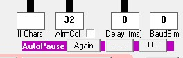

AutoPause System


AutoPause is a small system that can interrupt a message display on a BBS that does not have a page length setting for users. Some BBSes (like BBS:Express v1.0 and FoReM XE), don't have a way to pause the message especially when they are running ultra-fast on the internet. After hitting the [A]gain command to reread the current message, you cannot hit the Ctrl-S fast enough to pause the display before the data has completely been sent to you. This makes it difficult to read the beginning of the longer messages.
In your BBS record, you can set AutoPause on using the AutoPause Checkbox for each BBS that you need it on as seen here on the right. You should also set the AutoPause delay to a value between 300 and 600ms. You may have to experiment with this value on different BBSes.
There are three invisible buttons in the lower right corner of the control panel which will appear when you connect to a BBS that you have enabled AutoPause. These buttons are:
- Again - using this button, AT_Connect sends the [A] command first to redisplay the current message and then after a slight delay (300-600 ms), sends the Ctrl-S to pause the message before it displays too much to read. Then Ctrl-S (or the . . . button) can be used to restart and stop the message as necessary.
- . . . - will send the resume command (Ctrl-S or Chr[155] in BBS:Express) followed by the delay and then the Ctrl-S again. This will continue to display and pause the current msg.
- ! ! ! - this button will resume displaying the message from the current position to the end of the message.
NOTE: Ctrl-S can be used to stop and restart the message display.
NOTE2: Currently, this system is programmed for use with BBS:Express v1.0 and FoReM XE. If we decide that it needs to be programmed for other ATASCII BBSes, I will consider this for future releases.